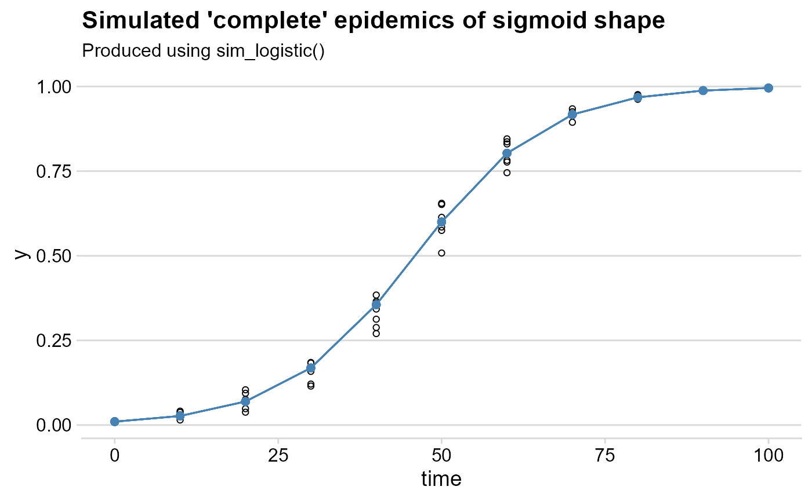
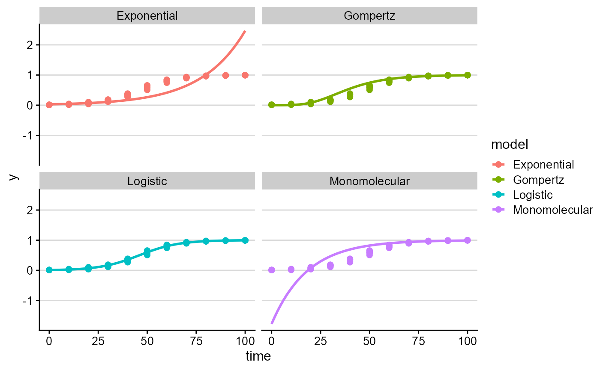
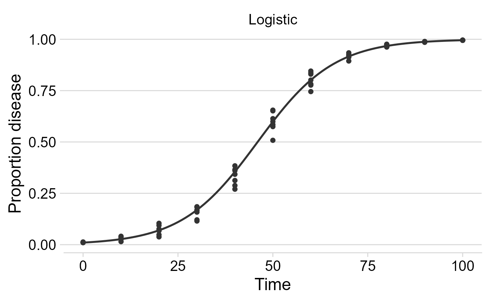
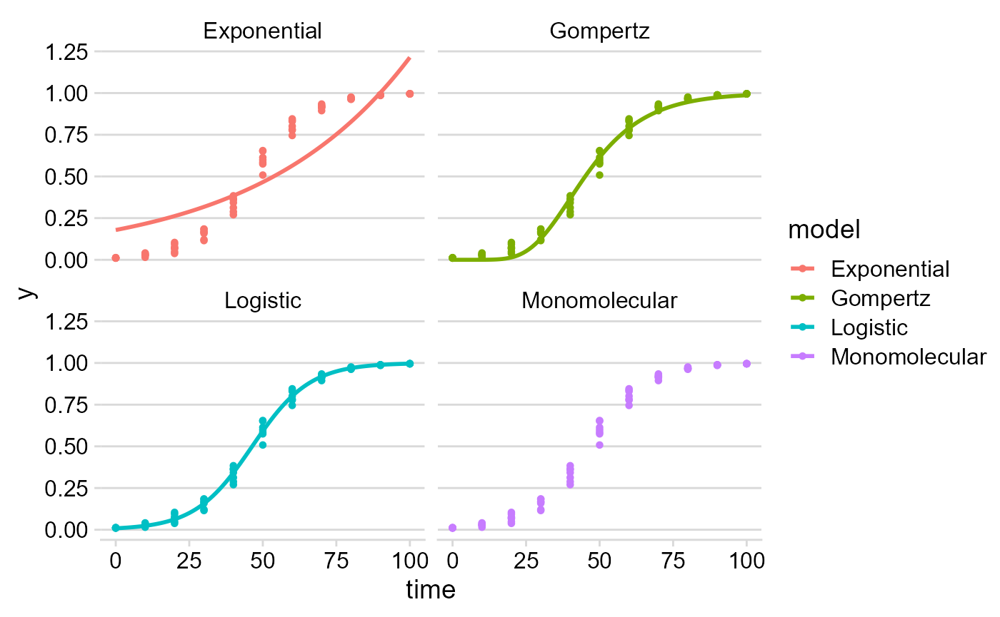
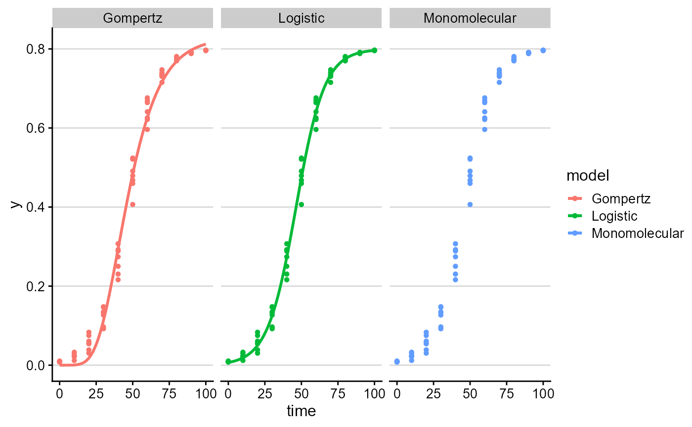
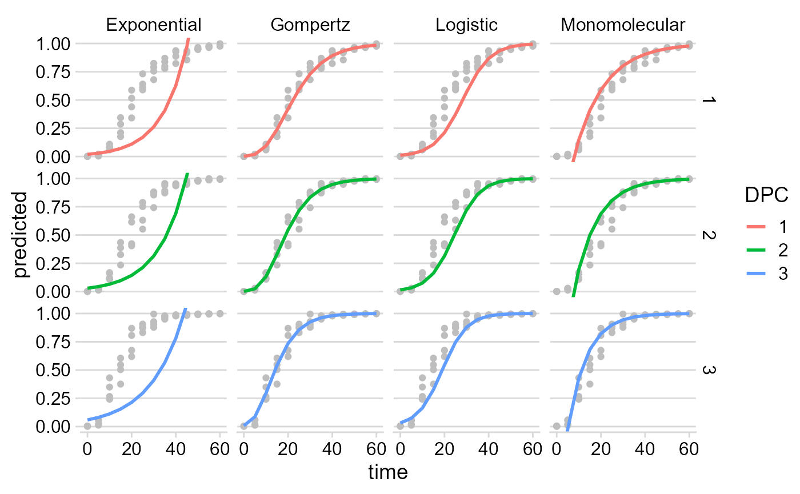
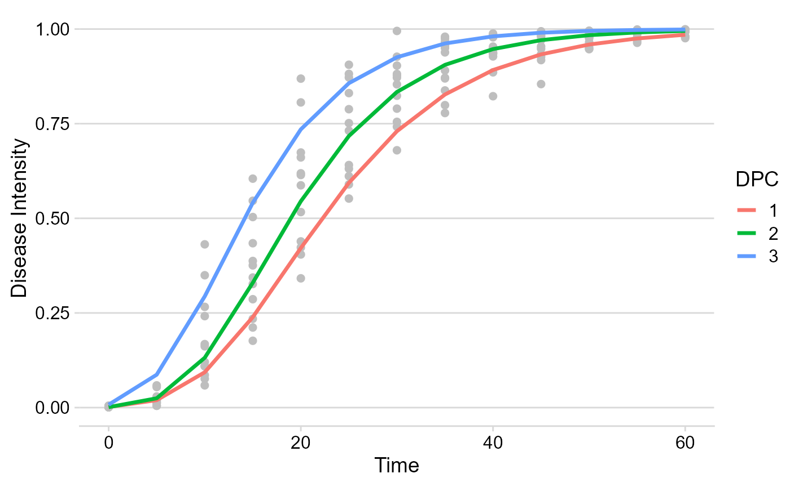

Base functions
epifitter provides functions for the fit of
(non-flexible) two-parameter population dynamics models to disease
progress curve (DPC) data: exponential, monomolecular, logistic and
Gompertz.
The goal of fitting these models to DPCs is to estimate numerically
meaningful parameters: y0 that represents primary inoculum
and r, representing the apparent infection rate. Hence, the
importance of choosing the model that best describe the epidemics to
better understand its proterties and compare epidemics.
Two approaches can be used to obtain the parameters:
- Linear regression models that are fitted to a specific transformation of the disease data according to each of the models.
- Non-linear regression models fitted to original data
Both approaches are available in epifitter. The simplest way
to fit these models to single epidemic data is using the
fit_lin() and fit_nlin() functions. For the
latter, the alternative fit_nlin2() allows estimating a
third parameter, the upper asymptote, when maximum disease intensity is
not close to 100%. The fit_multi() function is the most
flexible and allows to fit all models to multiple epidemic datasets.
First, we need to load the packages we’ll need for this tutorial.
Basic usage
Dataset
To use epifitter data at least two variables are needed, one representing the time of each assessment of disease intensity during the course of the epidemics and the other representing a disease intensity variable as proportion (e.g. incidence, severity, prevalence). For the case of designed experiments with replicates, a third variable is needed.
Let’s simulate a DPC dataset for one epidemics measured at replicated
plots. The simulated data resemble a polyciclic epidemics of sigmoid
shape. We can do that using the epifitter
sim_logistic() function of epifitter (more about
?sim_logistic here).
dpcL <- sim_logistic(
N = 100, # duration of the epidemics in days
y0 = 0.01, # disease intensity at time zero
dt = 10, # interval between assessments
r = 0.1, # apparent infection rate
alpha = 0.2, # level of noise
n = 7 # number of replicates
)Let’s give a look at the simulated dataset.
head(dpcL)## replicates time y random_y
## 1 1 0 0.01000000 0.01000000
## 2 1 10 0.02672668 0.02805496
## 3 1 20 0.06946279 0.03795496
## 4 1 30 0.16868385 0.16852760
## 5 1 40 0.35549349 0.38397525
## 6 1 50 0.59989486 0.65502345The dpc_L object generated using
sim_logistic() is a dataframe with four columns. The
y variable is a vector for the disease intensity as
proportion (0 < y < 1). To facilitate visualization, let’s make a
plot using the ggplot function of the ggplot2
package.
ggplot(
dpcL,
aes(time, y,
group = replicates
)
) +
geom_point(aes(time, random_y), shape = 1) + # plot the replicate values
geom_point(color = "steelblue", size = 2) +
geom_line(color = "steelblue") +
labs(
title = "Simulated 'complete' epidemics of sigmoid shape",
subtitle = "Produced using sim_logistic()"
)+
theme_minimal_hgrid()
Linear regression using fit_lin()
The fit_lin() requires at least the time
and y arguments. In the example, we will call the
random_y which represents the replicates. A quick way to
call these variables attached to the dataframe is shown below.
f_lin <- fit_lin(
time = dpcL$time,
y = dpcL$random_y
)fit_lin() outputs a list object which contains several
elements. Three elements of the list are shown by default: stats of
model fit, Infection rate and Initial Inoculum
f_lin## Results of fitting population models
##
## Stats:
## CCC r_squared RSE
## Exponential 0.9131 0.8402 0.6237
## Gompertz 0.9776 0.9563 0.4873
## Logistic 0.9977 0.9955 0.2146
## Monomolecular 0.9367 0.8809 0.6480
##
## Infection rate:
## Estimate Std.error Lower Upper rho
## Exponential 0.04462707 0.0022475856 0.04014965 0.04014965 0.007437846
## Gompertz 0.07111327 0.0017559327 0.06761527 0.06761527 0.017778316
## Logistic 0.09961316 0.0007732535 0.09807276 0.09807276 0.016602194
## Monomolecular 0.05498609 0.0023351295 0.05033427 0.05033427 0.027493045
##
## Initial inoculum:
## Estimate Linearized lin.SE Lower Upper
## Exponential 2.846738e-02 -3.558996 0.13296895 2.184279e-02 0.0371010991
## Gompertz 3.243387e-05 -2.335663 0.10388238 3.012411e-06 0.0002239497
## Logistic 1.014725e-02 -4.580354 0.04574629 9.271593e-03 0.0111046715
## Monomolecular -1.776962e+00 -1.021357 0.13814812 -2.656706e+00 -1.1088701071Model fit stats
The Stats element of the list shows how each of the four
models predicted the observations based on three measures:
- Lin’s concordance correlation coefficient
CCC(Lin 2000), a measure of agreement that takes both bias and precision into account - Coefficient of determination
r_squared(R2), a measure of precision - Residual standard deviation
RSEfor each model.
The four models are sorted from the high to the low CCC.
As expected because the sim_logistic function was used to
create the synthetic epidemic data, the the Logistic model was
superior to the others.
Model coefficients
The estimates, and respective standard error and upper and lower 95%
confidence interval, for the two coefficients of interest are shown in
the Infection rate and Initial inoculum
elements. For the latter, both the back-transformed (estimate) and the
linearized estimate are shown.
Global stats
The element f_lin$stats_all provides a wide format
dataframe with all the stats for each model.
f_lin$stats_all## # A tibble: 4 × 16
## best_CCC best_RSE model r r_se r_ci_lwr r_ci_upr v0 v0_se
## <dbl> <dbl> <chr> <dbl> <dbl> <dbl> <dbl> <dbl> <dbl>
## 1 4 3 Exponential 0.0446 0.00225 0.0401 0.0491 -3.56 0.133
## 2 2 2 Gompertz 0.0711 0.00176 0.0676 0.0746 -2.34 0.104
## 3 1 1 Logistic 0.0996 0.000773 0.0981 0.101 -4.58 0.0457
## 4 3 4 Monomolecular 0.0550 0.00234 0.0503 0.0596 -1.02 0.138
## # ℹ 7 more variables: r_squared <dbl>, RSE <dbl>, CCC <dbl>, y0 <dbl>,
## # y0_ci_lwr <dbl>, y0_ci_upr <dbl>, rho <dbl>Model predictions
The predicted values are stored as a dataframe in the
data element called using the same $ operator
as above. Both the observed and (y) and the
back-transformed predictions (predicted) are shown for each
model. The linearized value and the residual are also shown.
head(f_lin$data)## time y model linearized predicted residual
## 1 0 0.01000000 Exponential -4.60517019 2.846738e-02 -0.0184673795
## 2 0 0.01000000 Monomolecular 0.01005034 -1.776962e+00 1.7869618835
## 3 0 0.01000000 Logistic -4.59511985 1.014725e-02 -0.0001472455
## 4 0 0.01000000 Gompertz -1.52717963 3.243387e-05 0.0099675661
## 5 10 0.02805496 Exponential -3.57358990 4.447955e-02 -0.0164245944
## 6 10 0.02805496 Monomolecular 0.02845602 -6.023905e-01 0.6304454777Plot of predictions
The plot_fit() produces, by default, a panel of plots
depicting the observed and predicted values by all fitted models. The
arguments pont_size and line_size that control
for the size of the dots for the observation and the size of the fitted
line, respectively.
plot_lin <- plot_fit(f_lin,
point_size = 2,
line_size = 1
)
# Default plots
plot_lin 
Publication-ready plots
The plots are ggplot2 objects which can be easily customized
by adding new layers that override plot paramaters as shown below. The
argument models allows to select the models(s) to be shown
on the plot. The next plot was customized for the logistic model.
# Customized plots
plot_fit(f_lin,
point_size = 2,
line_size = 1,
models = "Logistic")+
theme_minimal_hgrid(font_size =18) +
scale_x_continuous(limits = c(0,100))+
scale_color_grey()+
theme(legend.position = "none")+
labs(
x = "Time",
y = "Proportion disease "
)
Non-linear regression
Two-parameters
The fit_nlin() function uses the Levenberg-Marquardt
algorithm for least-squares estimation of nonlinear parameters. In
addition to time and disease intensity, starting values for
y0 and r should be given in the
starting_par argument. The output format and interpretation
is analogous to the fit_lin().
NOTE: If you encounter error messages saying “matrix at initial parameter estimates”, try to modify the starting values for the parameters to solve the problem.
f_nlin <- fit_nlin(
time = dpcL$time,
y = dpcL$random_y,
starting_par = list(y0 = 0.01, r = 0.03)
)
f_nlin## Results of fitting population models
##
## Stats:
## CCC r_squared RSE
## Monomolecular 0.9104 0.8604 0.1583
## Exponential 0.8869 0.8245 0.1758
## Gompertz 0.9959 0.9933 0.0367
## Logistic 0.9982 0.9963 0.0246
##
## Infection rate:
## Estimate Std.error Lower Upper rho
## Monomolecular 0.02256068 0.001522488 0.01952773 0.01952773 0.011280341
## Exponential 0.01916079 0.001407090 0.01635772 0.01635772 0.003193465
## Gompertz 0.07226209 0.002129110 0.06802069 0.06802069 0.018065522
## Logistic 0.10250959 0.002086494 0.09835308 0.09835308 0.017084931
##
## Initial inoculum:
## Estimate Std.error Lower Upper
## Monomolecular -1.921273e-01 4.726510e-02 -2.862843e-01 -9.797042e-02
## Exponential 1.787016e-01 2.092668e-02 1.370135e-01 2.203897e-01
## Gompertz 1.466893e-08 2.542713e-08 -3.598450e-08 6.532236e-08
## Logistic 8.533242e-03 8.419049e-04 6.856081e-03 1.021040e-02We can check the results using plot_fit.
plot_fit(f_nlin) +
theme_minimal_hgrid()#changing plot theme
Estimating K (maximum disease)
In many epidemics the last measure (final time) of a DPC does not
reach the maximum intensity and, for this reason, estimation of maximum
asymptote (carrying capacity K) may be necessary. The
fin_lin2() provides an estimation of K in
addition to the estimates provided by fit_lin().
Before demonstrating the function, we can transform our simulated
data by creating another variable with y_random2 with
maximum about 0.8 (80%). Simplest way is to multiply the
y_random by 0.8.
Then we run the fit_nlin2() for the new dataset.
f_nlin2 <- fit_nlin2(
time = dpcL2$time,
y = dpcL2$random_y,
starting_par = list(y0 = 0.01, r = 0.2, K = 0.6)
)
f_nlin2## Results of fitting population models
##
## Stats:
## CCC r_squared RSE
## Monomolecular 0.9433 0.8999 0.1047
## Gompertz 0.9570 0.9600 0.0904
## Logistic 0.9982 0.9963 0.0198
##
## Infection rate:
## Estimate Std.error Lower Upper rho
## Monomolecular 0.01614355 0.003189458 0.009788412 0.009788412 0.008071774
## Gompertz 0.10526637 0.016684801 0.072021174 0.072021174 0.017103039
## Logistic 0.10267337 0.002532523 0.097627206 0.097627206 0.013680288
##
## Initial inoculum:
## Estimate Std.error Lower Upper
## Monomolecular -1.462051e-01 3.334841e-02 -2.126533e-01 -7.975695e-02
## Gompertz 1.006691e-19 2.696818e-18 -5.272859e-18 5.474197e-18
## Logistic 6.784477e-03 7.643834e-04 5.261410e-03 8.307544e-03
##
## Maximum disease intensity:
## Estimate Std.error Lower Upper
## Monomolecular 1.0000000 0.112171775 0.7764929 1.2235071
## Gompertz 0.6498957 0.018713653 0.6126079 0.6871834
## Logistic 0.7994452 0.004854938 0.7897715 0.8091189
plot_fit(f_nlin2)
NOTE: The exponential model is not included because it doesn’t have a maximum asymptote. The estimated value of
Kis the expected 0.8.
Fit models to multiple DPCs
Most commonly, there are more than one epidemics to analyse either
from observational or experimental studies. When the goal is to fit a
common model to all curves, the fit_multi() function is in
hand. Each DPC needs an unique identified to further combined in a
single data frame.
Data
Let’s use the sim_ family of functions to create three
epidemics and store the data in a single data.frame. The
Gompertz model was used to simulate these data. Note that we allowed to
the y0 and r parameter to differ the DPCs. We
should combine the three DPCs using the bind_rows()
function and name the identifier (.id), automatically
created as a character vector, for each epidemics as ‘DPC’.
epi1 <- sim_gompertz(N = 60, y0 = 0.001, dt = 5, r = 0.1, alpha = 0.4, n = 4)
epi2 <- sim_gompertz(N = 60, y0 = 0.001, dt = 5, r = 0.12, alpha = 0.4, n = 4)
epi3 <- sim_gompertz(N = 60, y0 = 0.003, dt = 5, r = 0.14, alpha = 0.4, n = 4)
multi_epidemic <- bind_rows(epi1,
epi2,
epi3,
.id = "DPC"
)
head(multi_epidemic)## DPC replicates time y random_y
## 1 1 1 0 0.00100000 0.0010000
## 2 1 1 5 0.01515505 0.0161830
## 3 1 1 10 0.07878459 0.0761623
## 4 1 1 15 0.21411521 0.3436388
## 5 1 1 20 0.39266393 0.5165197
## 6 1 1 25 0.56723412 0.6407593We can visualize the three DPCs in a same plot
p_multi <- ggplot(multi_epidemic,
aes(time, y, shape = DPC, group = DPC))+
geom_point(size =2)+
geom_line()+
theme_minimal_grid(font_size =18) +
labs(
x = "Time",
y = "Proportion disease "
)
p_multiOr use facet_wrap() for ploting them separately.
p_multi +
facet_wrap(~ DPC, ncol = 1)Using fit_multi()
fit_multi() requires at least four arguments: time,
disease intensity (as proportion), data and the curve identifier
(strata_cols). The latter argument accepts one or more
strata include as c("strata1",strata2"). In the example
below, the stratum name is DPC, the name of the
variable.
By default, the linear regression is fitted to data but adding
another argument nlin = T, the non linear regressions is
fitted instead.
multi_fit <- fit_multi(
time_col = "time",
intensity_col = "random_y",
data = multi_epidemic,
strata_cols = "DPC"
)All parameters of the list can be returned using the $ operator as below.
head(multi_fit$Parameters)## DPC best_CCC best_RSE model r r_se r_ci_lwr
## 1 1 4 4 Exponential 0.08720308 0.009444138 0.06823397
## 2 1 1 1 Gompertz 0.10102180 0.002730769 0.09553689
## 3 1 3 3 Logistic 0.16024027 0.008078777 0.14401357
## 4 1 2 2 Monomolecular 0.07303719 0.003169107 0.06667185
## 5 2 4 4 Exponential 0.07879947 0.009326907 0.06006583
## 6 2 1 1 Gompertz 0.12062152 0.003109453 0.11437600
## r_ci_upr v0 v0_se r_squared RSE CCC y0
## 1 0.10617219 -3.9543070 0.33390069 0.6303382 1.2740838 0.7732607 0.019171950
## 2 0.10650671 -1.8739859 0.09654726 0.9647527 0.3684008 0.9820602 0.001482226
## 3 0.17646697 -4.5240801 0.28562789 0.8872391 1.0898865 0.9402509 0.010728341
## 4 0.07940253 -0.5697731 0.11204484 0.9139632 0.4275358 0.9550478 -0.767865817
## 5 0.09753311 -3.5215036 0.32975595 0.5880676 1.2582685 0.7406078 0.029554962
## 6 0.12686704 -1.9129374 0.10993576 0.9678417 0.4194881 0.9836581 0.001144309
## y0_ci_lwr y0_ci_upr rho
## 1 0.0098039856 0.037491250 0.01453385
## 2 0.0003676966 0.004673228 0.02525545
## 3 0.0060731840 0.018883928 0.02670671
## 4 -1.2140462925 -0.411600813 0.03651859
## 5 0.0152399053 0.057316352 0.01313325
## 6 0.0002146545 0.004378676 0.03015538Similarly, all data can be returned.
head(multi_fit$Data)## DPC time y model linearized predicted residual
## 1 1 0 0.001000 Exponential -6.90775528 0.019171950 -0.0181719501
## 2 1 0 0.001000 Monomolecular 0.00100050 -0.767865817 0.7688658171
## 3 1 0 0.001000 Logistic -6.90675478 0.010728341 -0.0097283408
## 4 1 0 0.001000 Gompertz -1.93264473 0.001482226 -0.0004822264
## 5 1 5 0.016183 Exponential -4.12379417 0.029650046 -0.0134670497
## 6 1 5 0.016183 Monomolecular 0.01631537 -0.227018356 0.2432013529If nonlinear regression is preferred, the nlim argument
should be set to TRUE
multi_fit2 <- fit_multi(
time_col = "time",
intensity_col = "random_y",
data = multi_epidemic,
strata_cols = "DPC",
nlin = TRUE)## Warning in log(y0/1): NaNs produced
## Warning in log(y0/1): NaNs produced
## Warning in log(y0/1): NaNs produced
## Warning in log(y0/1): NaNs produced
## Warning in log(y0/1): NaNs produced
## Warning in log(y0/1): NaNs produced
## Warning in log(y0/1): NaNs produced
## Warning in log(y0/1): NaNs produced
head(multi_fit2$Parameters)## DPC model y0 y0_se r r_se df CCC
## 1 1 Monomolecular -0.17494390 0.042127605 0.04545796 0.002673725 50 0.9556734
## 2 1 Exponential 0.25125912 0.031477327 0.02591525 0.002625527 50 0.8475924
## 3 1 Gompertz 0.00181047 0.001075200 0.10340023 0.004305483 50 0.9925210
## 4 1 Logistic 0.03535149 0.006724844 0.14888188 0.008392131 50 0.9874503
## 5 2 Monomolecular -0.16632959 0.044842130 0.05171736 0.003253205 50 0.9539950
## 6 2 Exponential 0.29176518 0.035659144 0.02381234 0.002601039 50 0.8227586
## r_squared RSE y0_ci_lwr y0_ci_upr r_ci_lwr r_ci_upr
## 1 0.9256748 0.10758355 -0.2595596876 -0.090328118 0.04008763 0.05082830
## 2 0.7652372 0.18801088 0.1880350459 0.314483188 0.02064172 0.03118877
## 3 0.9853805 0.04634565 -0.0003491322 0.003970072 0.09475242 0.11204805
## 4 0.9782763 0.05984514 0.0218442454 0.048858738 0.13202579 0.16573797
## 5 0.9242815 0.11088567 -0.2563976561 -0.076261520 0.04518311 0.05825161
## 6 0.7302975 0.20351664 0.2201416826 0.363388681 0.01858800 0.02903668
## rho best_CCC best_RSE
## 1 0.022728982 3 3
## 2 0.004319208 4 4
## 3 0.025850058 1 1
## 4 0.024813647 2 2
## 5 0.025858680 3 3
## 6 0.003968723 4 4Want to estimate K?
If you want to estimate K, set nlin = TRUE
and estimate_K = TRUE.
NOTE: If you do not set both arguments
TRUE,Kwill not be estimated, becausenlindefaut isFALSE. Also remember that when estimating K, we don’t fit the Exponential model.
multi_fit_K <- fit_multi(
time_col = "time",
intensity_col = "random_y",
data = multi_epidemic,
strata_cols = "DPC",
nlin = T,
estimate_K = T
)## Warning in log(y0/K): NaNs produced
## Warning in log(y0/K): NaNs produced
## Warning in log(y0/K): NaNs produced
## Warning in log(y0/K): NaNs produced
## Warning in log(y0/K): NaNs produced
## Warning in log(y0/K): NaNs produced
## Warning in log(y0/K): NaNs produced
head(multi_fit_K$Parameters)## DPC model y0 y0_se r r_se K
## 1 1 Monomolecular -0.174945153 0.046253628 0.04545809 0.006550384 1
## 2 1 Gompertz 0.001810474 0.001313090 0.10340021 0.006290898 1
## 3 1 Logistic 0.035351469 0.007520978 0.14888186 0.010229411 1
## 4 2 Monomolecular -0.166326036 0.048474509 0.05171694 0.007018590 1
## 5 2 Gompertz 0.001859921 0.001530572 0.11566069 0.007744006 1
## 6 2 Logistic 0.034783345 0.007321525 0.16673298 0.011056257 1
## K_se df CCC r_squared RSE y0_ci_lwr y0_ci_upr
## 1 0.05871370 49 0.9556735 0.9256745 0.10867580 -0.2678952986 -0.081995008
## 2 0.01569255 49 0.9925210 0.9853805 0.04681618 -0.0008282795 0.004449227
## 3 0.01678041 49 0.9874503 0.9782763 0.06045272 0.0202374979 0.050465440
## 4 0.04990953 49 0.9539948 0.9242823 0.11201144 -0.2637392094 -0.068912862
## 5 0.01514054 49 0.9906392 0.9815300 0.05280857 -0.0012158794 0.004935721
## 6 0.01417623 49 0.9887393 0.9789074 0.05772124 0.0200701889 0.049496501
## r_ci_lwr r_ci_upr K_ci_lwr K_ci_upr rho best_CCC best_RSE
## 1 0.03229460 0.05862158 0.8820104 1.117990 0.02272904 3 3
## 2 0.09075817 0.11604224 0.9684646 1.031535 0.02585005 1 1
## 3 0.12832509 0.16943863 0.9662785 1.033721 0.02481364 2 2
## 4 0.03761256 0.06582133 0.8997030 1.100297 0.02585847 3 3
## 5 0.10009852 0.13122285 0.9695739 1.030426 0.02891517 1 1
## 6 0.14451460 0.18895137 0.9715118 1.028488 0.02778883 2 2Graphical outputs
Use ggplot2
to produce elegant data visualizations of models curves and the
estimated parameters.
DPCs and fitted curves
The original data and the predicted values by each model are stored
in multi_fit$Data. A nice plot can be produced as
follows:
multi_fit$Data %>%
ggplot(aes(time, predicted, color = DPC)) +
geom_point(aes(time, y), color = "gray") +
geom_line(size = 1) +
facet_grid(DPC ~ model, scales = "free_y") +
theme_minimal_hgrid()+
coord_cartesian(ylim = c(0, 1))## Warning: Using `size` aesthetic for lines was deprecated in ggplot2 3.4.0.
## ℹ Please use `linewidth` instead.
## This warning is displayed once per session.
## Call `lifecycle::last_lifecycle_warnings()` to see where this warning was
## generated.
Using the dplyr function filter only the model
of interest can be chosen for plotting.
multi_fit$Data %>%
filter(model == "Gompertz") %>%
ggplot(aes(time, predicted, color = DPC)) +
geom_point(aes(time, y),
color = "gray",
size = 2
) +
geom_line(size = 1.2) +
theme_minimal_hgrid() +
labs(
x = "Time",
y = "Disease Intensity"
)
Apparent infection rate
The multi_fit$Parameters element is where all stats and
parameters as stored. Let’s plot the estimates of the apparent infection
rate.
multi_fit$Parameters %>%
filter(model == "Gompertz") %>%
ggplot(aes(DPC, r)) +
geom_point(size = 3) +
geom_errorbar(aes(ymin = r_ci_lwr, ymax = r_ci_upr),
width = 0,
size = 1
) +
labs(
x = "Time",
y = "Apparent infection rate"
) +
theme_minimal_hgrid()